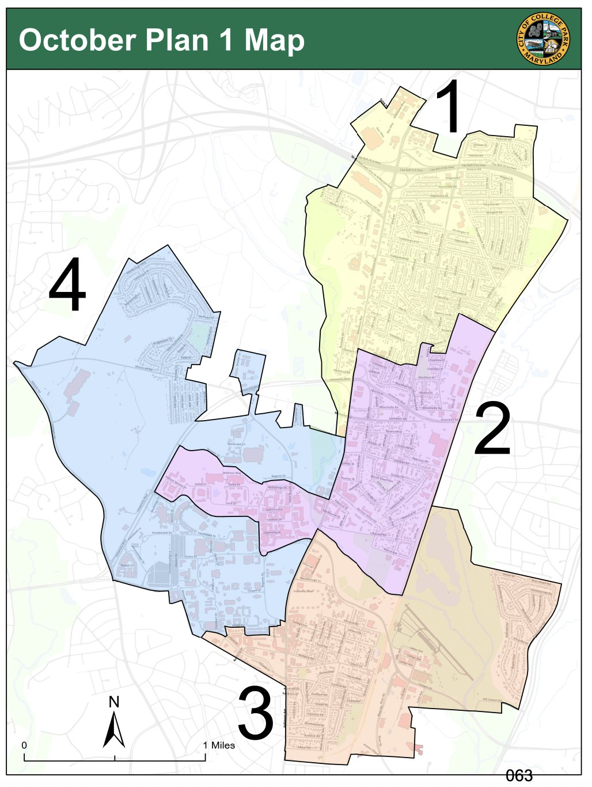

At a Sept. 12 public city redistricting presentation, two populations of College Park were at odds: students and permanent residents.
“We will be erased by the weight of the student”
- James Garnin, College Park resident
College Park resident James Garnin, along with other long-term residents, were rallying against student-focused redistricting, worried their residential communities could lose power in future city elections.
“My community will be crushed, our voices will be silenced, our values will be erased,” Garnin said. “We will be erased by the weight of the student”.
Students at the meeting urged the Redistricting Commission to view students as equally important to the College Park community as permanent residents.
“Students make up a large portion of the residents of College Park, so having their opinions involved in what our new maps are going to look like is extremely important,” student Caroline Thorne said.
The 2022 College Park city redistricting has unearthed decades-old divides between the growing student population and suburban permanent residents of the city. While the permanent residents eventually got their ideal maps, these issues are unlikely to be reburied.
This Year’s Debate
The independent Redistricting Commission for the city had made five maps based on the 2020 census that dramatically changed what neighborhoods would be in each district. Student members of the commission approved of these maps because they kept student populations together, something the old map never achieved.
“Having a student district where students feel like they can elect a member of the council that is really focused on meeting their needs is important,” redistricting commission member and student Valerie Graham said.
However, these maps prompted community criticism by splitting up neighborhoods that have been grouped together for decades. One of the maps split apart the Calvert Hills and Old Town neighborhoods: neighborhoods that are so closely related that their community association meetings were at one point held in the same building.
The two neighborhoods have similar issues with flooding, neighborhood stabilization and students living nearby, according to Calvert Hills Citizens Association President Daniel Oates. Separating these neighborhoods and other residential areas would have prevented residents from electing council members who can address their specific concerns.
“Our communities are just linked together,” Oates said.
Currently, the district with Calvert Hills and Old Town has two council members who have both experienced severe flooding and one who is a floodplain administrator.
Redistricting in College Park is based on having an equal population and an equal number of actual voters across council districts. This is done to balance out the low voting rates of students in the city, who mostly vote in their hometowns, with the higher voting rates of permanent residents.
When the Redistricting Commission originally drafted the maps, members had to change the current districts significantly to fit in the equal voters requirement and the population requirement due to the large growth in student areas since the last redistricting.
Some residents said the students were over-represented by the maps due to their relatively low voter-turnout rates.
“The biggest criteria should be where the voters are,” said David Dorsch, a College Park resident at a redistricting presentation.
Students at the presentation disagreed because they argued whether the majority of students vote in College Park or elsewhere, they still should have the opportunity to influence College Park politics.
“Government is not really about representing voters, it’s representing residents,” sophomore computer science major Eliav Hamburger said.
After heavy backlash from residents, the College Park City Council voted to give the commission more leeway in how equal the number of voters had to be for each district in order to keep residents in the same district.
District 3 council member John Rigg said the council needed to stay clear of picking its voters during an Oct. 5 work session, when the maps were discussed. Rigg referred to the recent Prince George’s County redistricting when the council sent a letter strictly against county officials making changes to county redistricting maps.
“The more we mess around with criteria and especially the more we mess around with lines on a map, the more we look like we are indulging in some of the same activities,” Rigg said.
D.W. Rowlands, the vice-chair of the Redistricting Commission, was the commission’s map-expert and the one who drew the map lines. Rowlands said that the commission overwhelmingly did not like the new maps that came out of this vote because she had to revert to gerrymandering-like tactics to keep the core of neighborhoods together.
Rowlands said that it was clear the council viewed the “core” of districts to be the residential single-family areas and not student areas. Council member Stuart Adams emphasized these points at a council meeting when he said that neighborhoods shouldn’t switch districts unless absolutely necessary.
“I did my absolute best to avoid moving any single family home neighborhoods between districts,” Rowlands said in October. “We feel that these maps are fundamentally worse than the original maps.”
One map split an apartment building, the University View, into two separate districts, according to Rowlands. The second map attached District 4 together with a small strip of land behind The Nine apartments.
“One might reasonably question the reasonableness of using an essentially gerrymandering technique of a strip of land a couple feet wide to connect two parts of a district,” Rowlands said.
“They've tried to keep students from being able to get control”
- Scott Cronin, Student Government Association Director of Civic Engagement
Another map switches the dorms on the campus between districts. Most of the maps have the student dorms split in some ways between Districts 4 and 3, but this map places North Campus dorms in District 2.
Scott Cronin, the director of civic engagement for the Student Government Association, said that this isn’t surprising.
“They've tried to keep students from being able to get control of their own city council seats,” Cronin said.
Around 55% of the city lives in student dorms or in student-only off campus apartments, according to a Redistricting Commission presentation.
One of the newer maps concerned District 1 council member Kate Kennedy, who ended up voting for the map. Under the new map, District 1, encompassing North College Park, will have almost three times more voters than the other council districts despite having the smallest population. Individual votes in District 1, for city council and other district-based policies, will have less weight than a vote in other districts.
“Your voice is more diluted, your vote is more diluted,” Kennedy said during a work session Oct. 18.
Kennedy also said the Oct. Plan One map would make it more difficult for non-incumbents to win elections because they would have to win over more voters, even though she voted for the map.
The city council voted for one of the new maps, Oct. Plan 1, during its Nov. 15 meeting. District 2 Council Member Susan Whitney said she voted for this plan because it more evenly distributed the civic associations- groups of highly politically-involved residents - across districts.
Under the approved plan, northern off-campus apartments are split between Districts 1, 2 and 4. Southern off-campus apartments and Old Town are in District 3. North campus will be in District 2 and South campus will be in District 4. District 1 will have more than two times as many voters as the other districts.

The new council district map for College Park, as of fall 2022. (Map courtesy of the City of College Park)
District 4 council member Maria Mackie supports the change because it will mix students and permanent residents, allowing the two groups to interact.
Student members of the commission were disheartened to hear about this vote, because the Oct. Plan 1 map split the student population into each district, eliminating any chance for students to elect a council member.
“Dividing campus in a way that feels a little bit arbitrary, can make it a bit more difficult if you want students to register and actually be involved with voting and city elections,” Graham said.
The two students on the commission said they felt outweighed by the permanent residents, even though the city is mostly made up of university-affiliated people.
“It was frustrating at times feeling like our questions and concerns did not hold the same weight as others,” student Redistricting Commission member Marilyn Yang said in an email about the disproportionate number of non-student commission members.
The Context
Redistricting has been a point of contention between students and permanent residents for decades. Three University of Maryland students sued the city in 1977, in DuBois v. City of College Park, because of the city’s old policy of not including on-campus students who weren’t registered to vote in their redistricting population estimates. The policy was ruled unconstitutional.
After this first case, the city then implemented a plan to only look at registered voters in its reapportioning of districts. This was challenged in 1980 by the students, but this time courts sided with the city.
This isn’t the first time student and permanent resident interests have clashed recently.
Gale Mamatova, the vice president of the North College Park Community Association, says the city has changed a lot since the last redistricting maps that were based on the 2010 census. Mamatova said the new developments in the city are changing the demographics of her neighborhood.

A new off-campus student apartment building in College Park (Photo by Katharine Wilson)
“That makes me really sad, the part of the Hollywood neighborhood I live in is mostly populated by diverse groups of people and older residents and their houses are on sale here all the time. So the demographic is changing,” Mamatova said.

A suburban neighborhood in North College Park (Photo by Katharine Wilson)
Since the last redistricting process, student-centered apartment buildings have sprung out across the city. As students encroach more and more into College Park neighborhoods, the tensions between residents and students are high. Residents in Old Town have raised concerns about loud parties in off-campus student houses, including resident Stephanie Stullich. She told the council in September about the Thursday night Old Town experience.
“It's really quite an experience,” Stullich said, “Now parties often have 50 or 100, or even more people yelling, screaming and listening to loud amplified music”.

A fraternity house in an otherwise quiet neighborhood (Photo by Katharine Wilson)
The council, through its city-university partnership, is working on a Community Preservation Trust geared toward encouraging houses to switch from rentals to permanent homeowners. This is a part of the council’s goal of neighborhood stabilization, for a city where most residents are on a four-year timeline.
“Homeowners simply have more skin in the game than renters,” District 2 Susan Whitney said last Spring.
At the Sept. 12 redistricting presentation, Garnin addressed the city-university partnership and how he believed this makes the city prioritize the rich university above residents. He was standing inside the new city hall building, made through the partnership across the street from campus.
“This is not my community, this outrageous building has nothing to do with my little town,” Garnin said. “Finally cast us free from this university.”
Council members have struggled to unite the city. During a mayoral candidate town hall in April of 2023, Fazlul Kabir said that students and residents have been isolated communities.
“Oftentimes, we think that [students are] different, which is very wrong and very unfortunate,” Kabir said.
A Look Forward
Both council members and Redistricting Commission members alike have said that they want to reconsider how redistricting is done in the city, especially with the actual voters number. Because of the growing student population, Rowlands said it will be next to impossible to retain the current redistricting requirements.
“It's getting much harder to satisfy both the constitutional requirements and the city charter requirements and in a decade, it will be impossible,” Rowlands said.
Rowlands said the city should look into creating a commission to look at how the city does redistricting and what to change for the future. She suggests the city base redistricting purely on population, like other jurisdictions. If that’s not possible, Rowlands said the city should look into how other college towns redistrict.
Council members have also expressed a need to reconsider the city charter’s redistricting requirements.
“Council will be looking at the way we approach redistricting and the way we approach representation in the city in general, to decide if the current model is working,” Whitney said.
This change, if followed through with, could have major implications for how students and residents are separated in the next redistricting.
With the council districts now set, the city will have to wait and see if the new lines will dramatically alter the Nov. 2023 city elections, or if the districts have been kept so similar that it will be like they never changed.